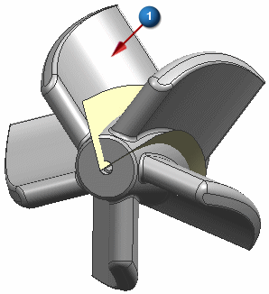
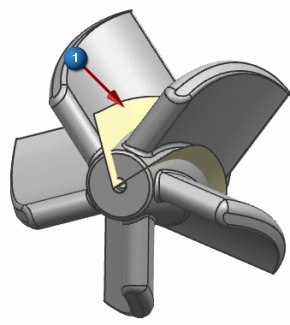
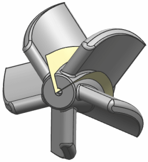

Split the solid body
Split the impeller part to isolate one of the blades.
 Split Body (Geometry Preparation group)
Split Body (Geometry Preparation group)
-



-
Tool Option
Face or Plane

-
Face or Plane (Select Face or Plane)
-

-
OK
